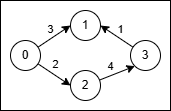

| Category | Difficulty | Likes | Dislikes |
|---|---|---|---|
| Algorithms | Medium | 58 | 2 |
google | facebook | palantir-technologies | asana
You are given a directed, weighted graph with n nodes labeled from 0 to n - 1, and an array edges where edges[i] = [ui, vi, wi] represents a directed edge from node ui to node vi with cost wi.
Each node ui has a switch that can be used at most once: when you arrive at ui and have not yet used its switch, you may activate it on one of its incoming edges vi → ui reverse that edge to ui → vi and immediately traverse it.
The reversal is only valid for that single move, and using a reversed edge costs 2 * wi.
Return the minimum total cost to travel from node 0 to node n - 1. If it is not possible, return -1.
Example 1:
Input: n = 4, edges = [[0,1,3],[3,1,1],[2,3,4],[0,2,2]]
Output: 5
Explanation:

0 → 1 (cost 3).3 → 1 into 1 → 3 and traverse it at cost 2 * 1 = 2.3 + 2 = 5.Example 2:
Input: n = 4, edges = [[0,2,1],[2,1,1],[1,3,1],[2,3,3]]
Output: 3
Explanation:
0 → 2 (cost 1), then 2 → 1 (cost 1), then 1 → 3 (cost 1).1 + 1 + 1 = 3.
Constraints:
2 <= n <= 5 * 1041 <= edges.length <= 105edges[i] = [ui, vi, wi]0 <= ui, vi <= n - 11 <= wi <= 1000